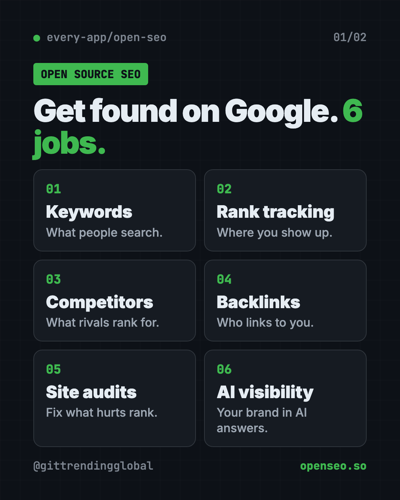

OpenSEO: Free Semrush Alternative, Open Source (2026)
- Published 15 Oct 2026
- Updated 16 Oct 2026
- 8 min read
- License MIT
- By the ITG Now team
OpenSEO is a free Semrush alternative for keyword research, rank tracking, backlinks and site audits. The software is open source, and instead of a big monthly bill, you pay only for the search data you actually use.
It also plugs into AI helpers like ChatGPT, Claude Code and Codex, so they can do SEO tasks with your real data. Here's what it does, what it really costs, and how to start.
Key takeaways
- Open source. MIT license, about 23.7K stars on GitHub.
- Pay as you go. You bring your own DataForSEO key and pay them for the data you use.
- Six focused jobs: keywords, rank tracking, competitors, backlinks, site audits and AI visibility.
- Works with AI helpers. ChatGPT (free and paid plans), Codex, Claude Code and more.
- Easy start: try it on the makers' website, or run your own copy.
What is OpenSEO?
You have a website. Maybe a shop, a blog or a local business page. You want more people to find it on Google. That work is called SEO, short for search engine optimization.
The big SEO tools, like Semrush and Ahrefs, are powerful. They're also expensive, and packed with so many features they can feel overwhelming.
OpenSEO's makers call it an SEO tool "for the people." In their words, it's "a pay-as-you-go alternative that you actually control." Instead of a giant menu, it focuses on a few clear workflows.
It's made by the every-app team and shared on GitHub. Open source means anyone can read and change the code that runs it.

What can OpenSEO do?
The README lists six main workflows:
- Keyword research. Find the words and phrases people type into Google.
- Rank tracking. See where your pages show up for those words over time.
- Competitor insights. Check what other sites in your space are doing.
- Backlinks. See which websites link to yours. Links like these help you rank.
- Site audits. Find problems on your site that may hurt your ranking.
- AI visibility. Check how your brand shows up in answers from AI tools.
It also has a clean, modern design, and ready-made "skills" for AI helpers. A skill is a step-by-step guide an AI follows to do a task.
How to use OpenSEO (real examples)
- Pick blog topics people want. A baker types "sourdough starter" into keyword research and finds the questions people actually search.
- Track your shop's rankings. An online store owner adds ten product keywords and checks each week whether pages move up or down.
- Spy on a competitor, politely. A local plumber checks which words a bigger rival ranks for, and writes pages for the ones it's missing.
- Fix site problems. Run a site audit, then fix the issues one by one, starting with the biggest.
- Let your AI do the legwork. Connect OpenSEO to ChatGPT or Claude Code and ask, "Which of my pages are close to page one?"
💡 Tip: Start with keyword research on the free hosted version. It's the quickest way to see if OpenSEO fits how you work.
How much does OpenSEO cost?
This is the part to read closely. There are two costs, and they're separate.
The software is free. It's MIT licensed, so you can use it, change it, and even use it for a business.
The search data is not free. OpenSEO gets its data from a company called DataForSEO. You pay them for what you use. OpenSEO's docs say new DataForSEO accounts get $1 of free credit to test with, and the minimum top-up is $50. There's no fixed monthly fee for that part.
You have two ways to run it:
- Hosted, on openseo.so. You can try it free. If you want to support the project, there's a $10 a month subscription. The README says the hosted service charges 28% extra on each data request it makes to DataForSEO.
- Self-hosted. You run your own copy and pay DataForSEO directly, so your costs are a bit lower.
How to install OpenSEO with Docker
The easiest start is the website, openseo.so. No setup needed.
Want your own copy? The makers offer two paths. Docker is best for trying it on your own computer. Cloudflare is their recommended path for using it across devices or with a team, and they say it works on Cloudflare's free plan.
These are the Docker steps from the project's docs. You need Docker Desktop, a free app that runs other apps in sealed boxes. You also need a DataForSEO API key, which is a password-like code that lets OpenSEO fetch search data.
- Get your DataForSEO key. The docs say to open DataForSEO's API Access page, click "Send by email," and copy the longer "Base64" credentials.
- Open Terminal (Mac or Linux) or PowerShell (Windows). Copy and paste this:
git clone https://github.com/every-app/open-seo
cd open-seo
cp .env.example .env
- Open the new
.envfile in a text editor. SetDATAFORSEO_API_KEYto the key you copied, and save. - Start OpenSEO. Copy and paste this:
docker compose up -d
- Open this address in your browser. The first start can take a minute or two.
http://localhost:3001
⚠️ Heads up: The Docker version runs with no login. The docs say to only expose it behind your own password-protected setup or private network. Don't put it straight on the internet.
The Docker version also sends anonymous usage counts, like how many projects you have. The docs say it never sends URLs, keywords, prompts or emails. To turn it off, add OPENSEO_TELEMETRY_DISABLED=1 to your .env file and restart.
Let Claude or Codex set it up for you
Claude Code and OpenAI Codex are AI helpers that can run setup steps on your computer. You paste a request, it does the steps, and you approve each one.
Copy and paste this:
Please help me self-host OpenSEO from github.com/every-app/open-seo using Docker.
1. Check that Docker is installed and running.
2. Clone the repo and create the .env file, following docs/SELF_HOSTING_DOCKER.md.
3. Ask me to paste my DataForSEO key, then add it to .env. Never print it back.
4. Start it and confirm http://localhost:3001 opens.
5. Turn off telemetry, and explain how to keep it private on my network.
Then try asking:
Connect OpenSEO to Claude Code using its MCP setup guide on openseo.so.
Use OpenSEO to find 10 keywords my site could rank for, and estimate what the search costs me.
Run a site audit on my website with OpenSEO and list the top 5 fixes in plain words.
OpenSEO at a glance
| Price | Free software; pay-as-you-go search data; optional $10/month hosted plan |
| Works offline | No, it needs live search data |
| Platforms | Web (hosted), or your own copy via Docker or Cloudflare |
| License | MIT (open source) |
| GitHub stars | About 23.7K |
| AI helpers | ChatGPT, Codex, Claude Code, OpenClaw, Hermes |
| Best for | Small businesses, bloggers and freelancers who want SEO without a big subscription |
Our take
OpenSEO covers the SEO basics most small sites need, without a big subscription. The honest pricing notes are refreshing: you always know who you're paying and why.
What we like:
- No fixed monthly fee for the data. Pay for what you use.
- Clear, focused workflows instead of a bloated dashboard.
- Works with AI helpers, so you can ask questions in plain words.
- Open code you can change, and an MIT license.
- Transparent about how the hosted version makes money.
What to watch for:
- The DataForSEO minimum top-up is $50, so "pay as you go" still starts with an upfront payment.
- Self-hosting takes some technical comfort.
- The Docker version has no login, so keep it private.
- It's newer and smaller than the big paid tools, so expect fewer features.
Want AI to help with your website, too? Try Hallmark, a free AI web design skill, or agent-browser, a free AI browser automation tool. For more new tools, see this month's trending GitHub repos.
FAQ
Is OpenSEO a free Semrush alternative?
The software is free and open source. You pay DataForSEO for the search data you use, so it's pay-as-you-go rather than a monthly subscription.
How much does OpenSEO really cost?
The tool is free. Data comes from DataForSEO, where new accounts get $1 of free credit and the minimum top-up is $50. The optional hosted plan is $10 a month.
Can I use OpenSEO with ChatGPT or Claude?
Yes. OpenSEO has an MCP server, a plug that lets AI helpers use your SEO data. The README links setup guides for ChatGPT, Codex and other agents.
Do I need to know how to code to use OpenSEO?
No. You can use the hosted version on openseo.so. Running your own copy takes some comfort with Docker or Cloudflare.
Is OpenSEO an Ahrefs alternative too?
Yes. The README calls it an "open source alternative to Semrush and Ahrefs." It covers keywords, rankings, backlinks and audits, but with fewer features than those big suites.
Get OpenSEO: github.com/every-app/open-seo
More free security tools
- Cloudflare Security Audit Cloudflare's Security Audit skill is a free AI code security check. It turns your AI coding helper into a careful reviewer that writes a clear report.
- ECC ECC is a free Claude Code plugin with 71 agents, 311 skills, memory and a security scanner. It teaches your AI coder to plan, test and review.
Latest AI news
- Meta gives away its big Muse Spark AI for free
- Chip startup Tenstorrent raises $1.5B at $6.2B value
- Ex-OpenAI engineer in bugging case held as flight risk
- US bars DeepSeek from civilian government agency systems
Keep reading

VoiceStudio: Free ElevenLabs Alternative
VoiceStudio is a free ElevenLabs alternative. Clone a voice, dub videos and turn text into speech on your own Mac, Windows or Linux computer.

HyperFrames: Make AI Videos From HTML
HyperFrames is a free tool that makes AI video from HTML. Your AI agent writes a web page, and HyperFrames renders it into an MP4 video.

Folia: Free Animated Lyrics Music Player
Folia is a free animated lyrics music player that shows full-screen moving lyrics for your local music, Navidrome and more. What it does and how to start.